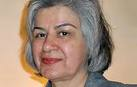

|
|
|
Browsing
Contact Us |
Campaigners |
Face to Face |
Tribune |
Interview |
News |
On the Web |
One Million |
Report
Farsi | Français | German | Italian | Spanish | العربية Also in this section
|
 Urgent Action: Woman Detained for Human Rights ActivismThursday 23 June 2011 Iranian human rights activist, Mansoureh Behkish, was arrested on 12 June 2011. She is a member of the ’Mourning Mothers’ group, which campaigns against human rights violations such as unlawful killings, arbitrary arrests, torture, and enforced disappearances. She is at risk of torture or other ill-treatment. Mansoureh Behkish, 57, was arrested by men believed to belong to the Ministry of Intelligence when they recognised her in a street in Tehran, at 8pm on 12 June 2011. She is now held in Section 209 of Evin Prison. She was able to make a short phone call to her mother two or three days after her arrest and again on 20 June, but could not talk about the conditions of her detention. Mansoureh Behkish suffers from a neurodegenerative disease called diffuse myelinoclastic sclerosis, or sometimes referred to as "Schilder’s disease". The ’Mourning Mothers’ group mainly comprises women whose children have been killed, disappeared or detained in post-election violence in Iran since June 2009, but it quickly grew to include relatives of other victims of human rights violations and their supporters. Mansoureh Behkish has lost several members of her family who were executed in the 1980s; since then she has been an activist and has been detained several times before. Mansoureh Behkish was among 33 women from the ’Mourning Mothers’ group arrested during their weekly meeting in Laleh Park, Tehran, on 9 January 2010 and held for several days. On 17 March 2010, she was prevented from travelling to Italy to visit her children and her passport was confiscated. She remains banned from travel abroad. PLEASE WRITE IMMEDIATELY in Persian, Arabic, English or your own language: Call on the Iranian authorities to release Mansoureh Behkish immediately and unconditionally if, as appears to be the case, she is held solely for the peaceful exercise of her rights to freedom of expression, assembly and association; Call on the authorities to ensure that she is protected from torture and other ill-treatment, and grant her immediate and regular access to her family, lawyer of her choice and adequate medical care; Urge the authorities to remove unlawful restrictions on freedoms of expression, association and assembly in Iran. Additional Information: The ’Mourning Mothers’ group was set up by women whose children have been killed, disappeared or detained in post-election violence in Iran since June 2009 but it quickly grew to include relatives of other victims of human rights violations and their supporters. The ’Mourning Mothers’ meet in silence for an hour each Saturday near the place and time of the killing of protester Neda Agha-Soltan, who came to symbolize the brutal repression meted out by security forces after the disputed presidential election of 2009. Her death was shown in footage circulated around the world Mansoureh Behkish has not herself lost a child but lost several members of her family in the 1980s and is very involved in the movement. Mansoureh Behkish, along with other women in the ’Mourning Mothers’ group, was first seized during the group’s weekly meeting in Laleh Park, Tehran on 5 December 2009. Members of the group were arrested again on 9 January 2010; several of them were beaten and 10 were taken to hospital (see: Iran’s ’Mourning Mothers’ must be released, 11 January 2010, http://www.amnesty.org/en/news-and-updates/news/irans-mourning-mothers-must-be-released-20100111). On 9 April 9 2011, Leyla Seyfollahi and Zhila Karamzadeh-Makvandi were sentenced in connection with their membership of the ’Mourning Mothers’. They were arrested on 8 February 2010 and appeared before Branch 28 of the Revolutionary Court in Tehran in May 2010 and March 2011. Leyla Seyfollahi and Zhila Karamzadeh-Makvandi were sentenced to four years imprisonment for “founding an illegal organisation” and “acting against state security”. They remain free pending their appeal. Mansoureh Behkish was first arrested in December 1981 and held in solitary confinement for three months, while pregnant. She was released on bail to deliver her baby outside prison. After her delivery, she escaped from her home town of Mashhad and went into hiding for more than seven years. Between 1981 and 1988 Mansoureh Behkish lost five members of her family including a sister, four brothers and a brother-in-law. Starting in August 1988 and continuing until shortly before the tenth anniversary of the Islamic revolution in February 1989, the Iranian authorities carried out mass summary executions of political prisoners, known as the “prison massacre” - the largest numbers since those carried out in the first and second year after the Iranian revolution in 1979. In all between 4,500 and 5,000 prisoners are believed to have been killed, including women. For the past few years, Mansoureh Behkish has participated in the commemoration of the victims of the 1988 mass executions, some of whom were buried in the Khavaran Cemetery in south Tehran. This event is held yearly by relatives of the dead on or about 29 August to mark the anniversary and demand justice for their loved ones. Mansoureh Behkish is the main carer of her elderly mother. |